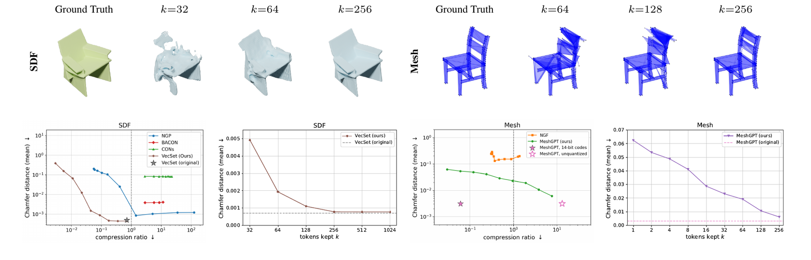

Compressing 3D shapes is important for the efficiency of many applications, yet existing methods either cannot leverage dataset-level statistics or use a fixed compression ratio for all shapes. We propose a learned variable-length compression method that exploits structure across a training dataset while adapting compressed representation size to individual shape complexity using only fast feed-forward inference. Our method operates on general latent representations and improves rate–distortion for both meshes and signed distance fields.
3D shapes vary enormously in complexity: a plain box needs far fewer bits than an ornate chair. Learned compressors trained on large datasets capture what shapes typically look like, but they give every shape the same fixed budget. Per-shape methods can adapt the budget, but they need slow optimization for each shape and can't use prior knowledge about shapes. Our method retrofits any pretrained 3D autoencoder to produce an ordered sequence of tokens, where keeping more tokens adds more detail. Each shape gets only as many tokens as it needs, with fast feed-forward encoding and no retraining of the original model.

@article{lin2026varlen3d,
title = {Data-Driven Variable-Length Compression of 3D Representations},
author = {Lin, Yvette Y. and Pentapati, Sai Karthikey and Sundaram, Sarvesh and Yang, Guandao and Fridovich-Keil, Sara},
journal = {arXiv preprint arXiv:2611.21802},
year = {2026}
}